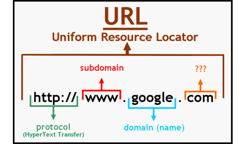
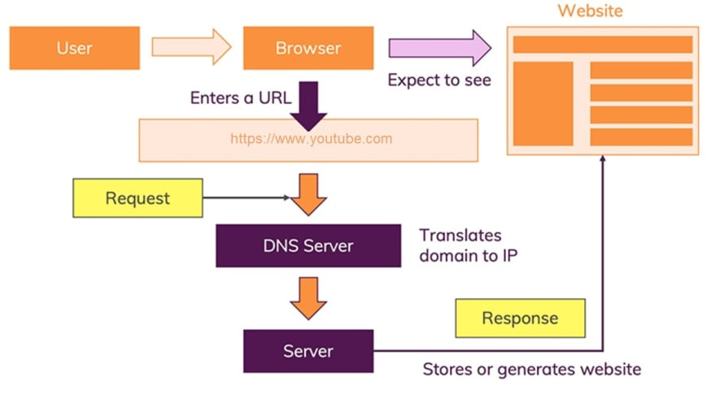
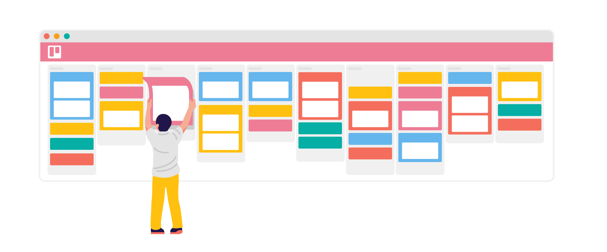

Don't speak tech? It's ok. But, you should still know how a website works so you don't get
hoodwinked on your next project.
I have some good news for you;
You don't have to be a professional web developer
to understand how websites work. if you're looking for a good source to start
you're in safe hands.
What's a website:
A website is a collection of web pages and related content that is identified by a common domain name and published on at least one web server.
Notable examples are: Google and Netflix.
All publicly accessible websites collectively constitute the World Wide Web.
There are also private websites that can only be accessed on a Private Network, such as a company's internal website for its employees.
Websites are typically dedicated to a particular topic or purpose, such as news, education, commerce, entertainment, or social networking.
Hyperlinking between web pages guides the navigation of the site, which often starts with a home page.
Users can access websites on a range of devices, including desktops, laptops, tablets, and smartphones. The app used on these devices is called a web browser.
And, just like the address of your house, your website also will have a unique address called (web address). With the web address, internet users can easily find your website and access the information on it.
The web is one of many ways you can share information via the internet. Others include email, instant messaging, File Transfer Protocol (FTP), etc.
And, just like the address of your house, your website also will have a unique address called (web address)
With the web address, internet users can easily find your website and access the information on it.
Clients and Servers:
A server is a sample of software or hardware that serves a specific service to its clients.
Web servers, domain name servers, and mail servers are some of the example servers using by all network users.
A client is a user program that connects to a server to access a service.
So basically computers connected to the web are called clients and servers.
A simplified diagram of how they interact might look like this:
 Clients are the typical web user's internet-connected devices (for example, your computer
Clients are the typical web user's internet-connected devices (for example, your computer
connected to your Wi-Fi, or your phone connected to your mobile network) and web-accessing
software available on those devices (usually a web browser like Firefox or Chrome).
Servers are computers that store webpages, sites, or apps. When a client device wants to
access a webpage, a copy of the webpage is downloaded from the server onto the client
machine to be displayed in the user's web browser.
In addition to the client and the server, we also need to mention:
The internet connection: Allows you to send and receive data on the web. It's basically like
the street between your house and the shop.
TCP/IP: Transmission Control Protocol and Internet Protocol are communication protocols that
define how data should travel across the internet. This is like the transport mechanisms that let
you place an order, go to the shop, and buy your goods. In our example, this is like a car or a bike
(or however else you might get around).
DNS: Transmission Control Protocol and Internet Protocol are communication protocols that
define how data should travel across the internet. This is like the transport mechanisms that let you place
an order, go to the shop, and buy your goods. In our example, this is like a car or
a bike (or however else you might get around).
HTTP: Hypertext Transfer Protocol is an application protocol that defines a language
for clients and servers to speak to each other. This is like the language you use to order your goods.
Component files: A website is made up of many different files, which are like the different parts
of the goods you buy from the shop. These files come in two main types:
Code files: Websites are built primarily from HTML, CSS, and JavaScript,
though you'll meet other technologies a bit later.
Assets: This is a collective name for all the other stuff that makes
up a website, such as images, music, video, Word documents, and PDFs.
What's a URL:
Uniform Resource Locator aka url is a specific type of Universal Resource Identifier (URI). A url normally locates an existing resource on the Internet.
it is used when a web client makes a request to a server for a resource.
Briefly, a URI is defined as any character string that identifies a resource.
A URL is defined as those URIs that identify a resource by its location or by the means used to access it,
rather than by a name or other attribute of the resource.
URL Components:
A URL for HTTP (or HTTPS) is normally made up of three or four components:
A scheme: identifies the protocol to be used to access the resource on the Internet. It can be HTTP (without SSL) or HTTPS (with SSL).
A host: identifies the host that holds the resource. For example, www.example.com. A server provides services in the name of the host.
A path: identifies the specific resource in the host that the web client wants to access. For example, /software/htp/cics/index.html.
A query string: If it is used, it follows the path component, and provides a string of information that the resource can use for some purpose.
The query string is usually a string of name and value pairs; for example, term=bluebird. Name and value pairs are separated from each other
by an ampersand (&); for example, term=bluebird&source=browser-search.

People these that the terms of the internet and the web interchangeably but they’re different technologies.
Internet: It’s the technology that connects computers worldwide and lets sharing information.
World Wide Web (or Web): It’s the system that enables sharing of information using the internet.
In other words: The internet and the web are the fundamental technologies on which websites are based.
So what happens, exactly?
When you type a web address into your browser (for our case we're accessing an online):
1. The browser goes to the DNS server, and finds the real address of the server
that the website lives on (you find the address of the shop).
2. The browser sends an HTTP request message to the server, asking it to send
a copy of the website to the client (you go to the shop and order your goods).
This message, and all other data sent between the client and the server,
is sent across your internet connection using TCP/IP.
3. If the server approves the client's request, the server sends the client
a "200 OK" message, which means "Of course you can look at that website! Here it is",
and then starts sending the website's files to the browser as a series of small chunks
called data packets (the shop gives you your goods, and you bring them back to your house).
4. The browser assembles the small chunks into a complete web page and displays
it to you (the goods arrive at your door — new shiny stuff, awesome!).

How to become a web developer?
To become a Web Developer, you should have an understanding of HTML, CSS, and JavaScript.
It’s also recommended to learn about CSS and CSS frameworks. Developing these fundamental
web development skills will give you the foundation and logic for communicating with programming languages.
1. Learn Web Development Fundamentals
The best first step to becoming a Web Developer is to start learning web development
fundamentals, including an understanding of HTML (Hypertext Markup Language), CSS
(Cascading Style Sheets), and JavaScript.
In fact, the practical advantages of coding boot camps are only getting clearer over time. For one
thing, the field of web development naturally attracts people from all other fields, many of them
making mid-career transitions – people for whom a clear and efficient path to skills expansion is
a top priority. Further, employers increasingly value skills and experience over education, placing
anyone who can prove their abilities on more equal footing with Developers holding a college degree.
2. Choose a Development Specialization
As you continue to grow your skills, you’ll need to choose an area of specialization. But what are
the types of web development? All Web Developers are categorized into three main types:
Front-End Developer: A Front-End Developer works on the “client-side” of web
development, meaning any portion of the site or app that users interact with. This can include
a site’s layout, design, and the way users interact with it.
Back-End Developer: A Back-End Developer works on the “server-side” of web development.
This is focused on the way a site functions and can include databases, servers, networks and hosting, and more.
Full-Stack Developer: A Full-Stack Developer is familiar with both front-and back-end
development and works with both sides of a website.

3. Learn Key Programming Languages for Web Development
Whatever your area of concentration, you’ll need to know how to use a handful of different
programming languages for web development and web design. So, what are the most common
programming languages?
Three families of programming languages form the basic tools involved in virtually all aspects of
web development:
- HTML (Hypertext Markup Language)
- CSS (Cascading Style Sheets)
- JavaScript

Of course, the list goes on – these are just the beginning. In fact, web development is such a
diverse and varied field that the list of all the tasks it can include (and all the coding languages
and markup languages you might use to accomplish them) is too long to fit in this space.
Fortunately, as a specialist, you can find and concentrate on the ones that work best for you.
What is Needed to Become a Web Developer?
Here are some of the things you’ll need to learn to become a Web Developer

Foundations: To become a Web Developer, you should develop a comprehensive
understanding of how the web works. This will deepen your HTML and CSS knowledge to build
and style more advanced static web pages.
Programming fundamentals: Foundational knowledge of JavaScript and object-oriented
programming should be a starting point for aspiring Web Developers, as it will improve your
ability to write and build components.
Front-end frameworks: It’s important for aspiring Web Developers to learn how to use React,
a JavaScript framework, to build complex and dynamic web pages and professional-level user interfaces.
Web servers: To become a Web Developer, you’ll need to know how to build servers using a
modern back-end framework and how to develop custom APIs and serve static websites and files.
Server-side programming: It’s important for Web Developers to have an understanding of
Server Side Rendering and Templating Engines, which are used to create empty page templates
populated with dynamic data, such as a series of product pages for an eCommerce store.
Databases: Aspiring Web Developers will also have to understand core concepts around data
and learn how to manage databases and data on a web server.
What is the role of a Web Developer?
A good Web Developer must
Write Working Code: He/she must a sharp eye for details and is constantly scanning code for anything that looks
“off.” They write clean code that is well structured and uses tools to identify potential errors before the code runs.
Write Code That Works Correctly: Just because the code works, doesn’t mean it works correctly.
Getting the code to work is only the first hurdle. All errors missed by Developers will cause program crashes,
system failure, data corruption, security breaches, or turn away users who expect reliability.
These errors become increasingly expensive to fix as they find their way into production and are discovered by end-users.
A good Developer, therefore, adopts a test-driven mindset, actively imagining all scenarios where errors can occur,
how they should be handled, and writing tests that prove the code is correct.
Collaborate With Their Team While a Web Developer spends much of their time interacting with a computer, the reality of their
work environment is social. It’s important to respect the team, know the roles, and responsibilities, and what’s expected.
A good Developer will, therefore, spend the time needed to understand the company’s best practices and standards.
They will also improve the development process in ways that save time and increase productivity. Most importantly, they will
have to have a positive attitude that makes the workplace more productive and supportive.
A good Developer recognizes that their career and reputation is their responsibility.
They strive to be a pleasure to work with, and always find ways to make the workload of their team lighter and more efficient.
Respect Timelines and Deadlines: A good Developer sets reasonable expectations, communicates openly about unexpected
roadblocks, and maintains the trust of their team and other stakeholders.
Estimating time on projects is a difficult task, as there are many unknown and unexpected
problems that come up when building complex software. Yet underestimating time to delivery is dangerous,
creating stress and burnout, the pressure to cut corners, and negative feelings from all stakeholders in the project.